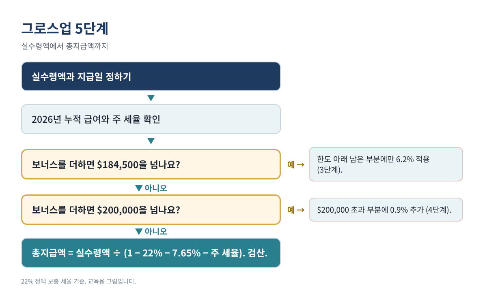
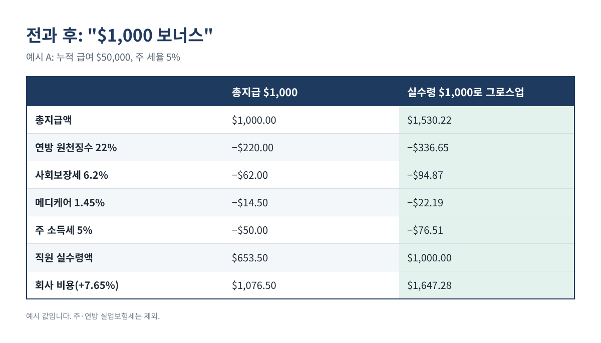
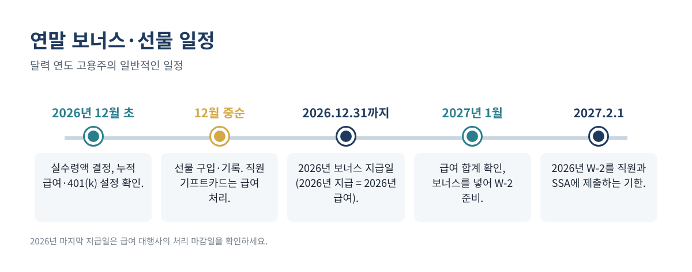

직원들에게 "올해 연말 보너스는 모두 $1,000"이라고 말했는데, 막상 받은 금액은 $650 정도입니다. 연방 원천징수, 사회보장세, 메디케어, 주 소득세가 나머지를 가져갔기 때문입니다. 넉넉하게 주려던 보너스가 오히려 실수처럼 느껴지는 순간입니다.
이럴 때 쓰는 방법이 그로스업(gross-up)입니다. 직원 손에 쥐여 줄 실수령액에서 거꾸로 계산해, 원천징수 후 정확히 약속한 금액이 남도록 총지급액을 더 크게 잡는 것입니다. 이 글에서는 2026년 세율, 계산식, 직접 검산할 수 있는 예시 3개, 회사가 실제로 부담하는 비용, 그리고 연말에 함께 챙기는 선물 기록법까지 정리합니다.
이런 분께 필요합니다: 직원 몇 명의 급여를 직접 처리하면서 연말에 정해진 실수령 보너스를 주고 싶은 사장님과 사무장님.
IRS 규정상 보너스는 "보충 급여(supplemental wages)"입니다. 정규 급여와 따로 지급하면 대부분 연방 소득세를 정액 보충 세율로 원천징수합니다. 아래 수치는 IRS Publication 15(2026)와 Topic 751에서 확인했습니다.
| 2026년 항목 | 세율·한도 | 부담 |
|---|---|---|
| 연방 보충 급여 원천징수 | 정액 22% (연 $1백만 초과분은 37%) | 직원(원천징수) |
| 사회보장세 | 각 6.2%, 급여 $184,500까지 | 직원·고용주 |
| 메디케어 | 각 1.45%, 한도 없음 | 직원·고용주 |
| 추가 메디케어 원천징수 | $200,000 초과 급여에 0.9% | 직원만 |
| 주 소득세 | 주마다 다름(0%~수 %) | 직원(원천징수) |
표 1. 이 글에서 쓰는 2026년 원천징수 세율(IRS Pub. 15, Topic 751).
두 가지를 기억하세요. 첫째, 22%는 연방 원천징수 비율일 뿐이고, 직원의 실제 세금은 개인 신고 때 정산됩니다. 둘째, 이 계산은 보너스를 별도로 지급(또는 별도로 구분)하고 정액 세율을 쓰는 경우를 전제로 합니다. 보너스를 정규 급여에 합쳐 전부 정규 급여처럼 원천징수(합산 방식)하면 결과가 달라집니다.
기본 경우(연간 급여가 사회보장세 한도와 $200,000에 못 미치는 직원)에는 모든 공제가 총지급액의 고정 비율이므로 다음과 같습니다.
총지급액 = 실수령액 ÷ (1 − 22% − 6.2% − 1.45% − 주 세율)
엑셀에서는 B2에 실수령액, B3에 주 보충 세율(예: 5%면 0.05, 소득세 없는 주는 0)을 넣습니다.
B4 총지급액: =ROUND(B2 / (1 - 0.22 - 0.062 - 0.0145 - B3), 2) B5 연방 22%: =ROUND(B4*0.22, 2) B6 사회보장세: =ROUND(B4*0.062, 2) B7 메디케어: =ROUND(B4*0.0145, 2) B8 주 소득세: =ROUND(B4*B3, 2) B9 실수령 확인: =B4 - SUM(B5:B8)
B9가 목표 금액과 같으면 됩니다(반올림으로 1~2센트 차이가 나면 총지급액을 1센트 조정). 주마다 규정이 다르니 꼭 확인하세요. 정액 보충 세율이 있는 주, 다른 방식을 쓰는 주가 있고, 시 단위 지방세가 붙는 곳도 있습니다.

보너스는 지급한 해의 급여입니다. 2027년 1월 2일에 주면 "2026년 몫"이라도 2027년 급여입니다.
사회보장세는 직원의 2026년 급여가 $184,500에 닿으면 멈춥니다. 추가 메디케어 원천징수(0.9%)는 $200,000 넘는 급여부터 붙습니다. 둘 다 보너스 전 누적 급여에 따라 달라집니다.
누적 급여가 $184,500에 가까우면 한도 아래 부분에만 6.2%가 붙습니다. 누적 급여를 Y, 남은 한도를 R = 184500 − Y라고 할 때, 총지급액이 R보다 크다면:
총지급액 = (실수령액 + 0.062 × R) ÷ (1 − 0.22 − 0.0145 − 주 세율)
보너스로 급여가 $200,000을 넘으면 넘는 부분에 0.9%를 더합니다. Y가 $184,500 초과 $200,000 미만이고 M = 200000 − Y일 때:
총지급액 = (실수령액 − 0.009 × M) ÷ (1 − 0.22 − 0.0145 − 0.009 − 주 세율)
총지급액에서 항목별 원천징수를 다시 계산해 빼 보세요. 약속한 실수령액과 같으면 끝입니다.
| 예시(설명용) | 총지급액 | 연방 22% | 사회보장 | 메디케어 | 주 | 실수령 |
|---|---|---|---|---|---|---|
| A. 실수령 $1,000, 누적 $50,000, 주 5% | $1,530.22 | $336.65 | $94.87 | $22.19 | $76.51 | $1,000.00 |
| B. 실수령 $5,000, 누적 $182,000, 주 0% | $6,734.16 | $1,481.52 | $155.00 | $97.65 | $0 | $5,000.00 |
| C. 실수령 $10,000, 누적 $195,000, 주 0% | $13,159.29 | $2,895.04 | $0 | $264.24 | $0 | $10,000.00 |
표 2. 앞으로 다시 계산해 검산한 예시 3개. 예시 값일 뿐입니다. C의 메디케어에는 $200,000 초과분 $8,159.29에 대한 0.9%가 포함됩니다.
A는 가장 흔한 경우입니다. B는 사회보장세 한도가 $2,500만 남아 단순 공식보다 총지급액이 훨씬 작아지는 경우이고, C는 $200,000을 넘어 일부에 0.9% 추가 메디케어가 붙는 경우입니다.

총지급액 외에 회사는 고용주 몫 사회보장세 6.2%(한도까지)와 메디케어 1.45%를 냅니다. 연방·주 실업보험세는 그해 직원 급여가 그 한도에 아직 안 닿았을 때만 붙습니다(FUTA는 직원당 $7,000까지). 예시 A는 다음과 같습니다.
총지급액 $1,530.22 고용주 사회보장세 $94.87 고용주 메디케어 $22.19 총비용(주 실업보험세 제외) $1,647.28
"$1,000 보너스"의 실제 비용은 약 $1,650입니다. 금액을 발표하기 전에 예산에 넣어 두세요.
직원의 401(k) 납입 선택이 보너스에도 적용되면 보너스에서 납입액이 빠져 실수령액이 줄어듭니다. 그로스업 계산에 넣거나 급여 처리 전에 급여 대행사에 확인하세요.
12월에는 선물도 많이 나갑니다. 규칙이 두 가지로 나뉩니다.
| 날짜 | 받는 사람 | 관계 | 품목 | 금액 | 공제 가능액 |
|---|---|---|---|---|---|
| 12/10 | 고객 A (예시) | 고객 | 와인 세트 | $60 | $25 |
| 12/12 | 거래처 B (예시) | 납품업체 | 쿠키 상자 | $18 | $18 |
| 12/20 | 고객 A (예시) | 고객 | 달력 | $12 | $0 (한도 소진) |
표 3. 1인당 $25 규칙을 적용한 선물 기록부. 예시 데이터입니다.
날짜, 받는 사람, 관계, 품목, 금액 다섯 칸에 수식 한 칸이면 충분합니다.
F 공제 가능액: =MIN(E2, 25 - SUMIFS($F$1:F1, $B$1:B1, B2))
E열에 선물 금액을 넣으면, 같은 사람에게 준 선물은 1년 합계 $25에서 멈춥니다.

아닙니다. 원천징수 비율일 뿐이며, 실제 세금은 직원의 전체 소득과 신고 유형에 따라 개인 신고 때 정산됩니다.
일정 조건(예: 정규 급여에서 소득세를 원천징수한 경우)을 갖추면 보충 급여에 선택적 정액 세율을 쓸 수 있습니다. 한 해 보충 급여가 $1백만을 넘는 부분은 37%로 원천징수해야 합니다. 급여 대행사가 이 규칙을 적용합니다.
아닙니다. 선택입니다. 총지급액을 발표하는 회사도 많으니, 중요한 것은 분명하게 알리는 것입니다.
아닙니다. 직원에게 준 기프트카드는 과세 급여라 급여로 처리합니다. $25 선물 한도는 고객·거래처 선물에 적용됩니다.
위 과정을 그대로 해 주는 선물 기록부가 들어 있는 연말 보너스 그로스업 계산기 2026은(는) 아래 무료 키트 다운로드에서 가입 없이 무료로 받으실 수 있습니다(엑셀 + PDF 가이드).
이 글은 교육용 정보이며 세무·법률·급여 자문이 아니고, 어떤 결과도 보장하지 않습니다. 원천징수 방식과 주 규정은 다를 수 있으니 급여 처리 전에 급여 대행사나 전문가와 확인하세요.